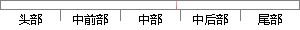

post(url, data, headers)
片段位置图

相似结果|
相似片段 1：，【in]VARlANT术Post—Data，【in]VARlANT$Headers)：对于发送数据，只有uRL、PostData和Headers三个参数有用。
相似片段 2：;（4）HTTP 请求整体结构，其中 method 代表枚举的请求方法，url 代表请求的地址，ver代表 http版本信息，headers代表 HTTP头部信息，data代表 HTTP请求数据
相似片段 3：5. def http_call(method, url, body=? ?, headers={}):这个函数返回一个HTTPResponse对象。参数method是POST、NOTIFY
|
※ 片段修改建议 ※
近似词参考：